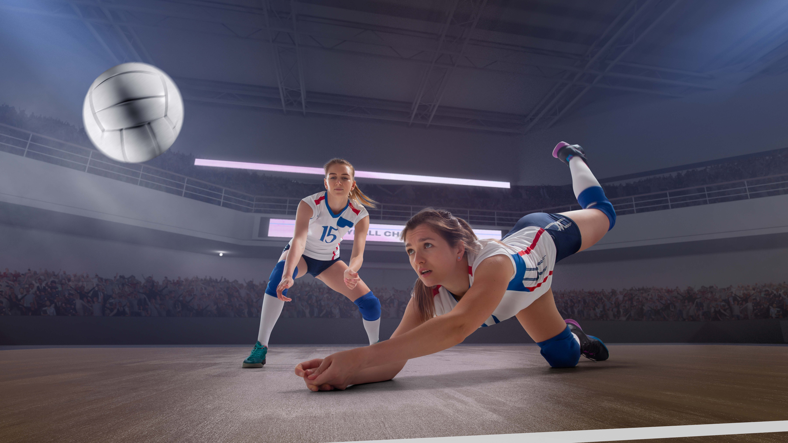

VOLEIBOL

Bienvenido/a a mi blog de voleibol.
El voleibol es un deporte dinámico que combina fuerza, agilidad y trabajo en equipo.
Se juega entre dos equipos de seis jugadores que buscan pasar el balón por encima de la red y hacerlo caer en el
campo contrario.
Este espacio está dedicado a compartir conocimientos, noticias, técnicas y reflexiones sobre el voleibol, con el
objetivo de fomentar la pasión por este deporte y crear una comunidad de aprendizaje.